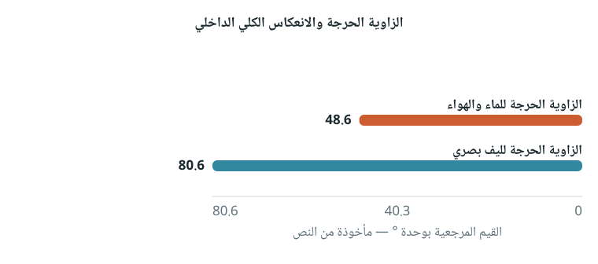

الزاوية الحرجة والانعكاس الكلي الداخلي
Critical angle and total internal reflection
الزاوية الحرجة هي أصغر زاوية سقوط في الوسط الأكثف ضوئياً لا يخرج عندها الضوء إلى الوسط الأقل كثافة: θ_c = arcsin(n₂/n₁). فوقها ينعكس الضوء كلياً داخل الوسط، وهي أساس الألياف البصرية والمنشورات العاكسة.
حين ينتقل الضوء من وسط أكثف ضوئياً إلى وسط أقل كثافة، ينحرف مبتعداً عن العمود. وكلما زادت زاوية السقوط زادت زاوية الانكسار حتى تبلغ 90° عند زاوية سقوط محددة هي الزاوية الحرجة. وفوق هذه الزاوية لا يخرج الضوء، بل ينعكس كلياً داخل الوسط. وتُحسب من قانون سنل عند θ₂ = 90°: θ_c = arcsin(n₂/n₁). مثال: ضوء في الماء (n₁ = 1.333) إلى الهواء (n₂ = 1.000): θ_c = arcsin(1.000/1.333) = arcsin(0.750) = 48.6°.
كيف تعمل الظاهرة؟
عند السقوط على السطح الفاصل، ينتقل جزء من الطاقة إلى الوسط الثاني وجزء ينعكس. وكلما اقتربت زاوية الانكسار من 90°، اقتربت الموجة المنتقلة من أن تسير موازية للسطح، فتحمل طاقة أقل عمودياً على السطح. وعند الزاوية الحرجة تصبح الموجة المنتقلة موازية تماماً، فلا تحمل طاقة إلى داخل الوسط الثاني. وفوقها لا يوجد حل حقيقي لزاوية الانكسار، فتنعكس كل الطاقة داخل الوسط الأول.
العلاقة بالأرقام
θ_c = arcsin(n₂/n₁). مثال: ماء–هواء → arcsin(0.750) = 48.6°. وليف بصري → arcsin(0.9865) = 80.6°. والزاوية الحرجة تزيد كلما اقترب معاملا الانكسار، فإذا تساويا لم توجد زاوية حرجة أصلاً. والانتقالية عند الزاوية الحرجة تساوي صفراً، وفوقها تبقى صفراً.
مفاهيم متقاربة
يُفرَّق بين الزاوية الحرجة وزاوية بروستر: الحرجة تُعدم الانتقال كله، وبروستر تُعدم انعكاس المكوّن p فقط. ويُفرَّق بين الانعكاس الكلي الداخلي والانعكاس الكلي الخارجي: الأول ممكن فقط من الأكثف إلى الأقل كثافة. ويُفرَّد بين الانعكاس الكلي والانعكاس الفوقي في الطبقات الرقيقة، حيث يحدث تداخل. وأخيراً يُفرَّق بين الزاوية الحرجة والزاوية الحدية للقبول في الألياف، حيث الثانية تشمل زاوية دخول الأشعة من الخارج.
حدود التطبيق
لا توجد زاوية حرجة إذا كان الوسط الثاني أكثف ضوئياً، فلا يحدث انعكاس كلي داخلي. ولا تتحقق في الأسطح الخشنة، حيث تتبعثر الأشعة بزوايا مختلفة. ولا تبقى كاملة إذا كان الوسط الثاني ممتصاً، حيث يتسرب جزء من الطاقة. ولا تصف الألياف المنحنية بشدة، حيث تتجاوز بعض الأشعة الزاوية الحرجة عند الانحناء.

| الكمية | القيمة | المصدر |
|---|---|---|
| الزاوية الحرجة للماء والهواء | 48.6 ° | [1] |
| الزاوية الحرجة لليف بصري | 80.6 ° | [1] |
المصادر
- 1 CODATA Value: speed of light in vacuum — NIST — CODATA 2022 recommended values (2024). physics.nist.gov/cgi-bin/cuu/Value?c · اطُّلع عليه 2026-11-22
- 2 CODATA Value: Planck constant — NIST — CODATA 2022 recommended values (2024). physics.nist.gov/cgi-bin/cuu/Value?h · اطُّلع عليه 2026-11-22
- 3 CODATA Value: elementary charge — NIST — CODATA 2022 recommended values (2024). physics.nist.gov/cgi-bin/cuu/Value?e · اطُّلع عليه 2026-11-22
استشهد بهذا المصطلح
الصيغتان مبنيتان من بيانات الصفحة نفسها: العنوان والتاريخ ورابط النسخة المنشورة.
الزاوية الحرجة والانعكاس الكلي الداخلي — Critical angle and total internal reflection. (2026). ديوان المعرفة — انفراد. https://infiradev.com/diwan/terms/term-critical-angle-tir.html
@misc{term-critical-angle-tir2026,
title = {الزاوية الحرجة والانعكاس الكلي الداخلي},
titleaddon = {Critical angle and total internal reflection},
howpublished = {{ديوان المعرفة — انفراد} — مرجع علمي عربي},
year = {2026},
url = {https://infiradev.com/diwan/terms/term-critical-angle-tir.html},
urldate = {2026-11-26},
note = {مراجعة علمية: hermes (مراجعة معتمدة 2026-11-26)}
}
راجعه: hermes (مراجعة معتمدة 2026-11-26) · 2026-11-26 · آخر تحديث 2026-11-22